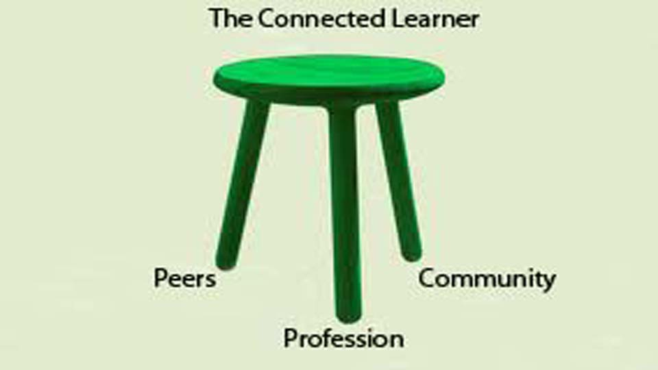

RESEARCH
My research interests span a broad area of design computing, specifically in novel HCI and collaborative technologies that enhance creativity and support designers. Research methodologies include engineering new immersive collaborative technologies and design cognition studies. Recent topics include: collective intelligence in design, tangible interfaces to 3D design models, intrinsic motivation as a model for curious learning agents, designing adaptive 3D virtual worlds, and agent-based virtual worlds.
CURRENT RESEARCH PROJECTS

|
 | |
| NatureNet | DInKs | Connected Learner |
RESEARCH TOPICS

|
||||
| Collective Intelligence | Curious Places | Virtual Worlds | Creative Interfaces | Studying Designers |
Collaborative vs Crowdsourcing Design
My research on collaborative design has lead to the development of new collaborative technology solutions to
supporting synchronous and asynchronous designing by enabling multi-user access to shared representations and facilitating communication.
Various studies of computer-supported collaborative design show how this process can benefit from studying how designers communicate while
using different collaborative technologies. Crowdsourcing design describes a relatively new phenomenon where the key to success lies in
large numbers of individuals providing input at many stages of the process. Research in this area considers not only shared representations
and communication, but also what motivates people to participate in design challenges.
Paulini, M., Maher, M.L., and Murty, P. (2011). The Role of Collective Intelligence in Design: A protocol study of online design communication,
in C. M. Herr, N. Gu, S. Roudavsky, M. A. Schnabel (eds.),Circuit Bending, Breaking and Mending: Proceedings of the 16th International
Conference on Computer-Aided Architectural Design Research in Asia CAADRIA 2011,pp 687-696.(pdf)
Fisher, D.H. and Maher, M.L. (2011). Free Play in Contemplative Ambient Intelligence, International Joint Conference on Ambient Intelligence, Springer.(pdf)
Maher, M.L. (2010) What People Talk About in Virtual Worlds, in William Sims Bainbridge (ed) Online Worlds: Convergence of the Real and the Virtual, Series: Human-Computer Interaction Series, Springer-Verlag ISBN: 978-1-84882-824-7
Maher, M.L. (2010). Designers and Collaborative Virtual Environments, In Xinagyu Wang and Jerry Tsai (Eds) Collaborative Design in Virtual Environments, Springer.(pdf)
Maher, M.L., Paulini, M. and Murty, P. (2010). Scaling up: From individual design to collaborative design to collective design, In John S Gero (Ed) Design Computing and Cognition DCC10, Springer, pp. 581-600. (pdf)
Murty, P., Paulini, M. and Maher, M.L. (2010). Collective Intelligence and Design Thinking, DTRS10: Design Thinking Research Symposium, Sydney, Australia. (pdf)
Maher, M.L. (2010). Evaluating Creativity in Humans, Computers, and Collectively Intelligent Systems, DESIRE10: Creativity and Innovation in Design, Aurhus, Denmark. (pdf)
Models of Curiosity
My research in this area develops models of curiosity as an extension to machine learning techniques and embeds the models in
complex, dynamic environments such as multi-user game environments and combined physical/virtual environments. This research has resulted in
a model for motivated reinforcement learning that can demonstrate cyclic emergent behavior for non-player characters in open-ended multi-user
virtual worlds. This research has also been the basis for developing a curious information display as a starting point for understanding
curious places.
Maher, M.L., Merrick, K. and Graham, B. (2011). Reasoning in the Absence of Goals, AAAI Fall Symposia Series: Advances in Cognitive Systems Technical Report, AAAI Press.(pdf)
Merrick, K. and Maher, M.L. (2009). Motivated Reinforcement Learning: Curious Characters for Multiuser Games, Springer-Verlag:Berlin/Heidelberg.
Merrick, K., Maher, M.L.: (2009) Motivated Learning from Interesting Events: Adaptive, Multitask Learning Agents for Complex Environments, Adaptive Behaviour, SAGE Publications, Peter M. Todd (Ed.), Vol 17(1):7-27.
Gu, N and Maher, ML (2007). Designing Curious Places: Digital and Computing Technologies in the Workplace, in Calder J (ed), Public #3 - Worklife, Melbourne: WoodsBagot Research Press, 101-115.
Maher, M. L., Merrick, K. and Saunders, R. (2007). From Passive To Proactive Design Elements: Incorporating Curious Agents Into Intelligent Rooms. in Proceedings of CAADFutures 2007.
Merrick, K. and Maher, M.L. (2006). Motivated Reinforcement Learning for Non-Player Characters in Persistent Computer Game Worlds, in ACM SIGCHI International Conference on Advances in Computer Entertainment Technology, ACE 2006, July 14-16, Hollywood, CA, USA, CD publication, no page numbers.
Maher, M.L., Merrick, K. and Macindoe, O. (2006). Intrinsically Motivated Intelligent Sensed Environments, EGICE 2006, Springer-Verlag, Berlin, pp 455-475.
Designing and Learning in Virtual Worlds
My research in this area started with the availability of MUDS and MOOS
and now involves extensions and applications for 3D virtual worlds such as Active Worlds
and SecondLife. This research has resulted in principles for designing virtual places that
take the perspective of architectural design and the extension of virtual worlds to include
agent models for design, curious, and emergent interactive behaviors.
Maher, M.L., Simoff, S., and Cicognani, A. (2000). Understanding Virtual Design Studios, Springer-Verlag, London. 235p.
Maher, M.L. and Fruchter, R. (2007). Support for design teams Artificial Intelligence for Engineering Design, Analysis and Manufacturing, 21(3):201-202.
Maher, M.L., Rosenman, M. and Merrick, K. (2007). Agents For Multidisciplinary Design In Virtual Worlds, Artificial Intelligence for Engineering Design, Analysis and Manufacturing, 21(3):267-277.
Gu N., Gul L. F., Maher M. L. (2007). Designing and Learning Within the Design: A Case Study of Principles for Designing and Teaching 3D Virtual Worlds, in CAADRIA 2007: Proceedings of the 12th International Conference on Computer-Aided Architectural Design Research in Asia, Nanjing, China, pp. 127-132.
Maher, M.L., Gul, L.F. and Bilda, Z. (2006). Studying Design Behaviour in Collaborative Virtual Environments, In R. N. Pikaar & E. A. P. Koningsveld & P. J. M. Settels (eds), Proceedings of 16th World Congress on Ergonomics ( IEA2006 Congress). Maastricht, Netherlands: Elsevier, Ltd. CD publication, no page numbers.
Maher, M.L., Bilda, Z. and Gul, L.F. (2006). Impact of Collaborative Virtual Environments on Design Behaviour , in JS Gero (ed), Design Computing and Cognition'06, Springer, Dordrecht, The Netherlands, pp 305-321.
Rosenman, M., Merrick, K., Maher, M.L. and Marchant, D. (2006). DESIGNWORLD: A Multidisciplinary Collaborative Design Environment Using Agents in a Virtual World, in JS Gero (ed), Design Computing and Cognition'06, Springer, Dordrecht, The Netherlands, pp 695-710.
Creativity with Tangible User Interfaces
My research in tangible user interface relates new HCI techniques to the needs of
creative designers. The emphasis is on the development of tabletop systems, augmented reality systems,
and mobile computing systems to support a designer while creating and developing 3D designs that respond
to an open ended design specification. This research has resulted in prototype systems that are being
evaluated using protocol analysis to determine the impact of tangible interfaces on spatial reasoning
and design cognition.
Kim, M. J. and Maher, M.L. (2008). The Impact of Tangible User Interfaces on Designers' Spatial Cognition, Human-Computer Interaction A Journal of Theoretical, Empirical, and Methodological Issues of User Science and of System Design, Volume 23 Issue 2, 101-137. http://dx.doi.org/10.1080/07370020802016415
Kim, M. J. and Maher, M.L. (2008). The Impact of Tangible User Interfaces on Spatial Cognition During Collaborative Design, Design Studies, Vol 29/3 pp 222-253. http://dx.doi.org/10.1016/j.destud.2007.12.006
Kim, M.J. and Maher, M.L. (2007). Collaborative Design in a Tabletop System employing Tangible User Interfaces , in Proceedings of the 11th International Conference on Computer Supported Cooperative Work in Design, W. Shen (Ed.), IEEE.
Maher, M.L. and Kim, M.J. (2006). Studying Designers Using A Tabletop System For 3D Design With A Focus On The Impact On Spatial Cognition, in M. Fjeld and M. Takatsuka (eds) First IEEE International Workshop on Horizontal Interactive Human-Computer Systems, Tabletop 2006, Adelaide, Victoria, Australia, IEEE, pp 105-112.
Kim, M.J. and Maher, M.L. (2007). Collaborative Design in a Tabletop System employing Tangible User Interfaces , in Proceedings of the 11th International Conference on Computer Supported Cooperative Work in Design, W. Shen (Ed.), IEEE.
Computational and Cognitive Models of Design
My research in this area started with my PhD thesis in artificial intelligence in design.
It has evolved over the years to consider a broad range of computational models that have the potential
to model the processes associated with creative design. This research has resulted in several computational
models that have been demonstrated to show their potential as designers and more recently to provide models
for understanding human designers through design cognition studies.
Gero, JS and Maher ML (eds) (2005). Computational and Cognitive Models of Creative Design VI, University of Sydney, 377p.
Maher, M. L. and Pu, P. (eds) (1997). Issues and Applications of Case-Based Reasoning to Design, Lawrence Erlbaum Associates, New Jersey, 345p.
Maher, M.L., Balachandran, B., Zhang, D.M. (1995). Case-Based Reasoning in Design, Lawrence Erlbaum Associates, New Jersey, 246p.
Gero, J. S. and Maher, M. L. (eds) (1993). Modeling Creativity and Knowledge-Based Creative Design, Lawrence Erlbaum Associates, New Jersey, 354p.
Maher, M.L. (2007). The Synergies Between Design Computing and Design Cognition, in Computing in Civil Engineering, L. Soibelman and B. Akinci (Eds), American Society of Civil Engineers.